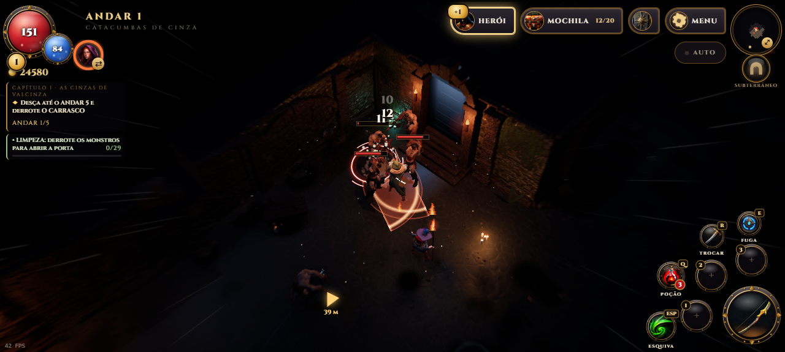
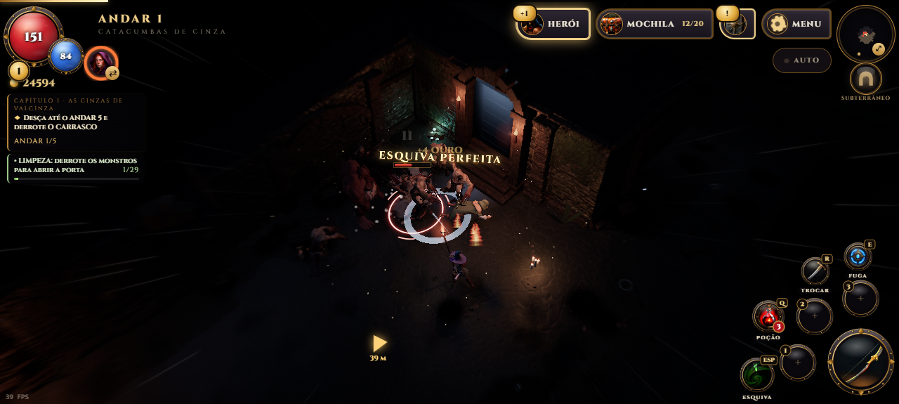
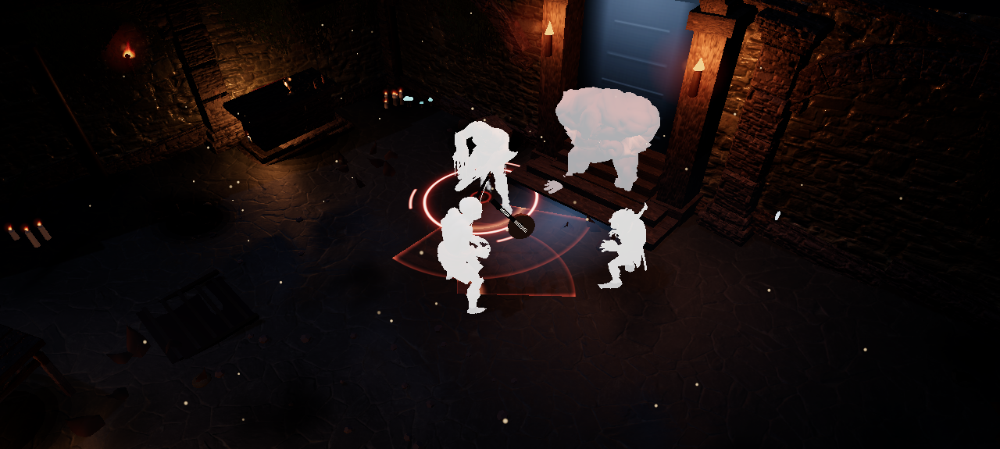
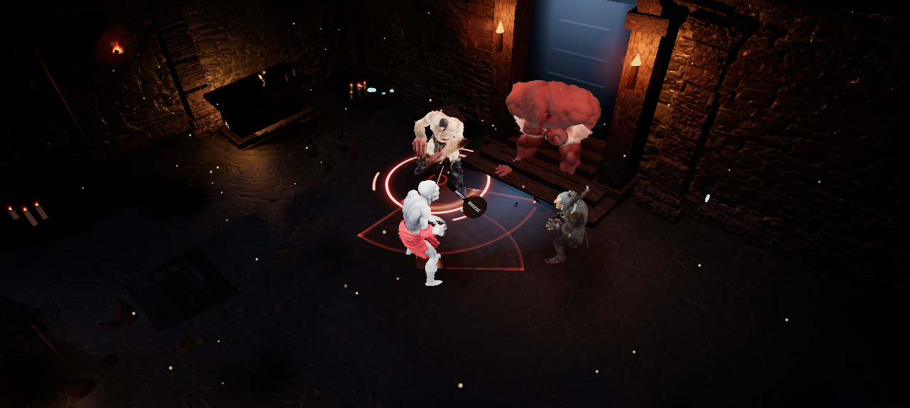

Uma experiência para deixar o combate frenético, inspirada em hack and slash e soulslike. Ela está em teste: conte o que achou da intensidade.
Ímpeto
Acertos e abates em sequência enchem o medidor de Ímpeto, e o herói fica até 35% mais rápido: anda, ataca e se recupera da esquiva mais depressa. A tela acompanha como num jogo de corrida: as bordas esticam para fora a partir do herói, linhas finas de velocidade correm pelas laterais e a câmera abre um pouco. Cheio, é o FRENESI. Para manter o embalo é preciso lutar bem: levar dano derruba o medidor, e ficar sem acertar faz ele esvaziar.

Ímpeto alto: o herói fica nítido no centro e o mundo corre nas bordas.
Esquiva perfeita
Toda esquiva dá um estouro curto de velocidade. Rolar no instante em que o golpe inimigo cai é uma esquiva perfeita: o tempo desacelera, o mundo perde a cor por um instante e o Ímpeto sobe bastante.

Câmera lenta e cor apagada no instante da esquiva perfeita.
Prefere o combate clássico? Menu → Opções → ÍMPETO E VELOCIDADE desliga tudo.
Golpes que não apagam o monstro
O clarão do acerto pintava o bicho inteiro de branco chapado, e no escuro os monstros viravam recortes cinza. Agora o clarão acende a própria textura: dá para ver músculos, ossos e armadura no instante do golpe. A morte por gelo também ficou azul sem perder o desenho.

Antes: no clarão, só silhuetas brancas.

Depois: o clarão acende o desenho de cada monstro.
Combate mais fácil de ler
Os números de dano nascem acima da barra de vida e ficam na frente dela. O "+XP" sai um instante depois, sem cobrir o golpe final. O aviso de feito conquistado espera a luta acabar, e o cartão do bestiário aparece abaixo do painel de missão, sem cobrir o objetivo.